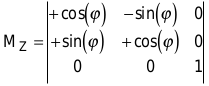
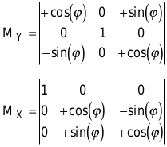
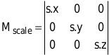
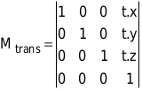
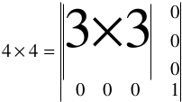
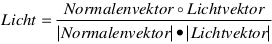

Demo-Programmierung unter Windows 95/NT
Begnadete Körper
Mit Drehungen und Streckübungen bringen Sie nicht Ihren, sondern dreidimensionale Körper in Bewegung. Statt Muskeln trainieren Sie dabei die mathematischen Grundlagen.
Carsten Dachsbacher/Nils Pipenbrinck
Ein komplexer dreidimensionaler Körper läßt sich nur sehr schwer im zweidimensionalen Speicherbereich Ihres Rechners nachbilden – so scheint es auf den ersten Blick. Doch im Prinzip bestehen 3D-Objekte lediglich aus Punkten (Vertices, Singularform: Vertex) und Polygonen (Faces).
Zur Vereinfachung beschränkt sich die 3D-Engine auf die Darstellung von Dreiecken dieser Ausgabe. Am einfachsten ist es, eine Struktur oder ein Objekt zu erzeugen, das Vertices und Faces voneinander getrennt in zwei Arrays speichert.
Ein Vertex ist ein Ortsvektor, der die Position des Punktes im Raum angibt. Ein Vektor und ein Vertex sind also von der Struktur her identisch. Heißt es im Text Vertices, sind damit Eckpunkte des 3D-Objekts gemeint. Finden Sie den Ausdruck Vektor, handelt es sich um einen Wert, mit dem gerechnet wird.
Für ein Face brauchen Sie mehr Informationen: Neben den Indizes der Vertices, die das Dreieck aufspannen, sind noch dessen Farbe und ein paar andere Daten interessant.
3D-Engines sind einfach aufgebaut: Alle auf Polygonen basierenden Engines verwenden eine nahezu identische Hauptschleife – im Fachjargon „Pipeline“ genannt. Die Standard-Pipeline arbeitet in fünf Schritten.
• Sie transformiert die Objekt-Geometrie vom Objekt- in das Welt-Koordinatensystem,
• entfernt nicht sichtbare Polygone (Backface Culling),
• berechnet die Beleuchtung (Shading),
• schneidet den nicht sichtbaren Bereich ab (Clipping)
• und zeichnet die Polygone (Rendering).
Anfangs ist etwas Grundwissen in linearer Algebra und Matrizen-Rechnung nötig. In den Formeln beschreibt ⨯ das Kreuzprodukt (zweidimensionales Vektorprojekt) und O das Skalarprodukt (dreidimensionales Vektorprodukt) zweier Vektoren.
Transformationen
Da Sie im Moment noch keine frei bewegliche Kamera für die Engine benötigen, sind Transformationen wie Drehungen, Größenänderungen und Verschiebungen relativ einfach zu realisieren. Stellen Sie diese Operationen in der Matrix-Schreibweise dar. Das ist sehr übersichtlich und spart viel Zeit bei der Berechnung. Die Rotation eines Vektors um die z-Achse mit dem Rotationswinkel ϕ beschreibt die Matrix

Möchten Sie einen Punkt a um die z-Achse rotieren lassen, multiplizieren Sie ihn mit dieser Matrix. Die Koordinaten des Zielpunktes b erhalten Sie über die einzelnen Rechenschritte:
b.x=a.x*cos(ϕ)-a.y*sin(ϕ)+a.z*0
b.y=a.x*sin(ϕ)+a.y*cos(ϕ)+a.z*0
b.z=a.x*0+a.y*0+a.z*1
Die Rotationsmatrizen für die y- und x-Achse sehen ähnlich aus:

Sie brauchen nicht jeden Punkt nacheinander mit allen drei Matrizen multiplizieren. Wenn Sie zunächst das Produkt aus den Matrizen bilden, erhalten Sie eine Matrix für alle drei Transformationen.
Für wenige Punkte lohnt sich dieser Aufwand sicherlich nicht, da eine Matrizen-Multiplikation sehr viel Rechenaufwand benötigt. Bereits einfache Objekte besitzen aber meist schon über 200 Vertices. Daher beschleunigt die Kombination der Matrizen die Berechnung erheblich.
Die Darstellung der ausmultiplizierten Rotationsmatrix sei Ihnen an dieser Stelle erspart. Im Code der 3D-Engine finden Sie eine Routine, die diese Matrix direkt berechnet.
Die zweite, auf Objekte gerichtete Operation ist die Skalierung. Mit der Matrix  vergrößern und verkleinern Sie Objekte um den Skalierungsfaktor s.
Die Translation (Verschiebung) stellt Sie zunächst vor das Problem, die geeignete Matrix dafür zu finden. Der Trick besteht darin, die 3x3-Matrix auf eine 4x4-Matrix zu erweitern und jeden Vektor um eine vierte (nicht benutzte) Komponente zu vergrößern. 
Natürlich können Sie keinen 3D-Vektor mit einer 4x4-Matrix multiplizieren. Deshalb fügen Sie dem Vektor eine vierte Komponente hinu, die immer den Wert 1 besitzt.
Auch die alten 3x3-Matrizen schreiben Sie einfach in 4x4-Matrizen um: 
Im Quelltext von 3dengine.cpp bildet tobject::build_ltm (void) die lokale Transformationsmatrix.
Backface Culling
In der 3D-Grafik geht man davon aus, daß Polygone einseitig sind. Sie besitzen also nur eine Vorder- und eine Rückseite. Dieser kleine Trick spart bereits bis zu 50 Prozent Rechenzeit ein.
Nehmen Sie als Beispiel einen Würfel. Von außen betrachtet, sehen Sie nur seine Außenseiten. Bei der Darstellung als 3D-Objekt wäre es daher sinnlos, die immer durch eine andere Vorderseite verdeckten Polygone an der Rückseite des Würfels zu zeichnen.
Ob ein Polygon sichtbar ist oder nicht, finden Sie mit einfacher Vektorarithmetik heraus. Zunächst ermitteln Sie den sogenannten Normalenvektor des Polygons: Er steht im rechten Winkel auf dem Polygon. Sind A, B und C die Vertices der Polygonebene, errechnen Sie ihn einfach aus dem Kreuzprodukt
Normalenvektor = [C-A] ⨯ [C-B]
Das Ergebnis normieren Sie auf die Länge 1, indem Sie jede Komponente durch die Länge des Vektors dividieren. Da die Blickrichtung der Kamera der z-Achse entspricht, finden Sie recht einfach heraus, ob das Polygon sichtbar ist oder nicht: Sobald der z-Anteil des Normalenvektors positiv ist, kann der Betrachter es nicht mehr sehen. Ein kleines Problem gibt es bei diesem Verfahren: Das Objekt wird transformiert. Um Drehung, Skalierung und Verschiebung auszugleichen, müßte man die Transformation auf die Normalenvektoren anwenden oder diese für jedes Bild neu ermitteln. Beides kostet sehr viel Rechenzeit.
Berechnen Sie die Sichtbarkeit der Faces deshalb vor der Drehung der Punkte. Dazu benötigen Sie zunächst die Inverse der Transformationsmatrix, die deren Aktionen wieder rückgängig macht. Als Beispiel nehmen wir die Matrix M, die zunächst einen Punkt 30 Grad um die z-Achse dreht und dann um den Vektor <1,2,3> verschiebt. Die Inverse dieser Matrix verschiebt zunächst den Punkt um <-1,-2,-3> und rotiert dann mit -30 Grad um die z-Achse. Wichtig: Die Inverse kehrt nicht nur die Vorzeichen der Werte um, sondern auch die Reihenfolge der Operationen.
Mit der inversen Matrix multiplizieren Sie jetzt die Position der Kamera, die bei festem Kamerastandpunkt im Ursprung <0,0,0> liegt:
Lokale Kamera := ( <0,0,0> * Inverse Matrix )
So erhalten Sie die vom Objekt aus gesehene Position der Kamera.
Diese recht aufwendige Matrix-Inversion berechnet die Funktion angle_perserving_matrix_inverse in 3dmath.cpp. Die dort benutzte Implementation von Kevin Wu1 ist für die in der 3D-Grafik vorkommenden Matrizen optimiert und sehr schnell. Sie funktioniert jedoch ausschließlich mit aus Rotationen, Skalierungen und Translation berechneten 4x4-Matrizen.
Da Sie die Kameraposition rückwärts transformiert haben, brauchen Sie für den Sichtbarkeitstest die Transformation des Objekts nicht mehr zu beachten. Das Polygon zeigt mit seiner Vorderseite dann zum Betrachter, wenn gilt:
(Normalenvektor O Lokale Kamera) >= (Normalenvektor O a)
Dabei ist a ein beliebiger, nichttransformierter Vertex des Face.
Der Normalenvektor und somit auch der Normalenvektor O a ist für jedes Polygon konstant. Daher berechnet die Routine tobject::calc_ facenormals() diese Werte vor dem ersten Zeichnen des Objekts und speichert sie in der Polygonstruktur.
Es werde Licht
Die 3D-Engine dieser Ausgabe beherrscht vorläufig lediglich Flat-Shading: die einfachste Art der Beleuchtung. Den Anteil des einfallenden Lichts berechnen Sie direkt aus dem Normalenvektor des Polygons und dem Vektor der Einfallsrichtung des Lichts (Lichtvektor).
Um sich die Arbeit zu erleichtern, gehen Sie davon aus, daß die Lichtquelle unendlich weit vom Objekt entfernt ist. Dann können Sie das Licht als Einfallsvektor definieren und brauchen ihn nicht für jede Fläche neu zu berechnen. Den Beleuchtungswert ermitteln Sie mit der Formel  Die Normalenvektoren sind schon während der Objektinitialisierung auf die Länge 1 eingestellt. Ist auch der Lichtvektor normalisiert, können Sie die Beleuchtungsformel vereinfachen, indem Sie den Nenner entfernen:
Licht = Normalenvektor O Lichtvektor.
Bleibt noch ein Problem: Sie müssen wieder die Transformation des Objekts in Betracht ziehen, sonst rotiert die Lichtquelle mit dem Objekt. Wie bei der Entfernung der unsichtbaren Faces kürzen Sie den Prozeß ab und transformieren den Lichtvektor einmal mit der inversen Rotationsmatrix. Mit der so berechneten Lichtintensität schattieren Sie – wie bereits in PC Underground der letzten Ausgabe (ab S. 228) beschrieben – den Farbwert des Polygons. Dieses einfache Beleuchtungsmodell ist schon sehr effektiv und bringt eine Menge Leben in die 3D-Szene.
Clipping
Nun haben Sie zwar eine Menge Berechnungen durchgeführt, aber noch immer ist der Bildschirm leer. Haben Sie noch etwas Geduld, eine Hürde ist noch zu überwinden: das Clipping. Gerade in diesem Bereich gibt es viele verschiedene Lösungsansätze. Wir stellen Ihnen das elegante 3D-Clipping-Verfahren vor.
Was bedeutet Clipping? Stellen Sie sich vor, Sie haben ein Polygon transformiert und möchten es jetzt zeichnen. Die z-Koordinate eines Punkts könnte den Wert 0 bekommen. Da aber die Position des Betrachters genau auf der Ebene mit dem z-Anteil 0 liegt, wären erhebliche Darstellungsfehler die Folge.
„Schneiden“ Sie deshalb zunächst einmal alle Teile des Polygons ab, die vor der Z-Near-Clipping-Grenze liegen. Diese frei wählbare (positive) Grenze gibt die Entfernung an, bis zu der Polygone sichtbar sind. Teile, die näher am Betrachter liegen, werden „geclipped“. Um die berechneten 3D-Welten auf den zweidimensionalen Monitor zu projizieren, verwenden Sie die beiden Gleichungen
Bild.x = (Vektor.x * Projektionsfaktor) / Vektor.z + Bildbreite / 2
Bild.y = (Vektor.y * Projektionsfaktor) / Vektor.z + Bildhöhe / 2
Diese Formeln zeigen, daß z-Werte nicht gleich 0 sein dürfen. Eine Division durch 0 würde unweigerlich zum Programmabsturz führen.
Diese Gleichungen erzeugen auch Koordinaten, die außerhalb des Bildbereichs liegen. Sie könnten jetzt eine Polygonroutine zum Zeichnen benutzen, die mit nicht geclippten Polygonen umgehen kann. Das wäre jedoch nicht sehr effizient. Sinnvoll und sauberer ist es, die Polygone schon vor dem Zeichnen auf den sichtbaren Bildschirmbereich zurechtzustutzen.
Der für den Betrachter sichtbare Bereich ist eine viereckige Pyramide, die vom Kamerastandpunkt aus aufgespannt wird. Aus der Projektionsformel berechnen Sie direkt die Ebenen, die diese Pyramide bilden. Das erledigt die Funktion Setup_Fustrum() in der Datei 3dclip.cpp.
Für das Clipping an einer Ebene benötigen Sie den zugehörigen Normalenvektor und den Abstand der Ebene Z-Near vom Ursprung – alle anderen Ebenen gehen durch den Ursprung und haben daher den Abstand 0.
Berechnen Sie zunächst für jeden Punkt des Face den Abstand zur Ebene:
Abstand = (Ebenennormale O Vertex) - (Ebenenabstand zum Ursprung)
Anschließend können Sie in einer Schleife alle Punkte und die Linie vom aktuellen zum nächsten Punkt betrachten Punkt A in der Beispielskizze liegt innerhalb des Sichtbereichs – Clipping ist nicht erforderlich. Mit Punkt C sieht das anders aus. Berechnen Sie die Schnittpunkte der Verbindungsstrecke von A nach C sowie von B nach C mit der Ebene, und fügen Sie diese zusätzlichen Punkte anstelle von C in Ihr Polygon ein.
Wie Sie sehen, hat das fertige Polygon jetzt vier Eckpunkte. Das stellt jedoch kein Problem dar, da Sie das Polygon vor dem Zeichnen wieder in Dreiecke zerlegen können. Nachdem Sie das Polygon mit der ersten Ebene geschnitten haben, fahren Sie an der nächsten Ebene fort.
Wiederholen Sie diesen Vorgang für alle Ebenen. Taucht dabei ein „degeneriertes“ Polygon mit weniger als drei Eckpunkten auf, brechen Sie den Vorgang für dieses Polygon ab und ignorieren es einfach. Dieser Fall tritt dann ein, wenn ein Polygon komplett auf der unsichtbaren Seite einer Ebene liegt, aber einer oder zwei der Eckpunkte auf einer Clipping-Ebene.
Rendering
Zeichnen Sie ein Polygon zeilenweise. Für jede Bildschirmzeile berechnen Sie den linken und den rechten Rand des Polygons und setzen die Pixel dazwischen (Scanline) mit den eingestellten Parametern. Diese Parameter sagen zum Beispiel aus, ob das Polygon einfarbig, mit Helligkeitswerten oder mit einer Textur belegt sein soll. Momentan beschränken wir uns auf das Grundgerüst einer einfachen 3D-Engine und zeichnen nur Polygone mit einer einheitlichen Farbe.
Der erste Schritt besteht darin, den obersten und den untersten Eckpunkt herauszufinden. Dazu suchen Sie einfach nach den Punkten mit minimalem und maximalem y-Wert. Als Beispiel soll folgendes Polygon dienen, dessen Eckpunkte zum Zeichnen gegen den Uhrzeigersinn angeordnet sein müssen:
Hier ist e1 der oberste Eckpunkt und e2 der unterste. Nach dem Setzen von e1 suchen Sie an der linken Kante des Polygons den nächsten Startpunkt der Scanline. Dazu betrachten Sie die Eckpunkte mit steigendem Index (hier e2). Auf der rechten Seite gilt es, den Punkt mit dem nächstniedrigeren Index zu finden (hier zuerst e0, dann e2). Beachten Sie, daß der nächsthöhere Punkt zu e2 wieder e0 ist und analog dazu e2 der nächstniedrigere zu e0.
Für das Beispielpolygon ergeben sich zwei Kantenzüge:
Beginnend beim obersten Eck berechnen Sie die Steigung der x-Komponente für den rechten Kantenzug (von e1 nach e0) – also die Zahl der Pixel, um die sich die x-Koordinate der Kante pro Zeile verschiebt. Kantenabschnitte der Höhe 0 ignorieren Sie einfach. Die Steigung für den ersten rechten Kantenzug ist also
dx = (x0 - x1) / (y0 - y1)
Diese Steigung addieren Sie bei jedem Sprung in eine neue Scanline zum aktuellen x-Wert. Dadurch erreichen Sie eine enorme Geschwindigkeitssteigerung gegenüber der direkten Berechnung der Kanten anhand der Eckpunktkoordinaten.
Berechnen Sie dann die Steigung für den ersten Teil der linken Kante. Besitzen alle Kantenabschnitte die Höhe 0, ist die Gesamthöhe ebenfalls gleich 0 und das Polygon somit unsichtbar. Beginnen Sie damit, die x-Werte entlang der Kanten zu interpolieren und die Scanlines zu zeichnen.
Ist das Ende eines Abschnitts erreicht, suchen Sie den nächsten mit einer Höhe größer als 0, berechnen die Steigungen und zeichnen die verbleibenden Scanlines. Sind Sie beim untersten Punkt angelangt, ist das Polygon vollständig gezeichnet.
Der Z-Buffer
Bei der Anzeige am Bildschirm darf kein Polygon ein zuvor gezeichnetes überdecken, das dem Betrachter näher steht. Am einfachsten stellt dies der sogenannte Maler-Algorithmus sicher. Er sortiert alle Polygone nach der Entfernung zum Betrachter und zeichnet dann die weiter entfernten zuerst. Körper, die sich überschneiden oder räumlich gesehen sowohl vor als auch hinter anderen liegen, verursachen bei diesem Verfahren allerdings grobe Darstellungsfehler.
3D-Grafikkarten greifen deshalb auf den Z-Buffer-Algorithmus zurück. Er berechnet für jedes zu zeichnende Pixel die Entfernung des aktuellen Polygons zu eventuell vorher gezeichneten Polygonen an dieser Stelle. Ein neuer Pixel erscheint nur, wenn er näher am Betrachter liegt.
Wenn Sie die Polygonroutine mit einer Z-Buffer-Implementierung programmieren, belegen Sie einen Speicherbereich (Z-Buffer), der für jeden Bildpunkt eine 16 Bit große Entfernungsvariable reserviert.
Wie aber bestimmen Sie die Entfernung eines Polygons zum Betrachter aneinem bestimmten Punkt innerhalb des Polygons? Ganz einfach: Diesen Wert interpolieren Sie genauso wie die x-Koordinate der Polygonkante entlang einer Kante. Dann benötigen Sie nur noch ein Inkrement, das die Änderung der Entfernung entlang einer Scanline bestimmt.
Aus zwei Gründen ist es sinnvoll, nicht die Entfernung direkt zu interpolieren, sondern mit ihrem Kehrwert zu arbeiten:
• Zum einen ist der Kehrwert perpektivisch korrekt (anderenfalls können bei sich schneidenden Polygonen Darstellungsfehler auftreten).
• Zum anderen liegt dieser Wert immer im Bereich zwischen 0 und 1, was die Verwendung von Fixpunkt-Arithmetik nahelegt (siehe Textbox unten).
Die Interpolationsdifferenzen (Deltas) ermitteln Sie entlang der Polygonkanten wie die x-Steigung. Die Horizontalschritte bleiben für das ganze Polygon konstant, Sie brauchen sie also nur einmal vor dem Zeichnen zu berechnen:
d = ((double)(x0-x2) / 65536.0 *
(double)(y1-y2) / 65536.0 -
(double)(x1-x2) / 65536.0 *
(double)(y0-y2) / 65536.0);
if (d==0.0) return;
id = 1.0 / d;
double y12 = (double)(y1-y2) / 65536.0;
double y02 = (double)(y0-y2) / 65536.0;
dz = ((double)(z0-z2) * y12 - (double)(z1-z2) * y02)*id;
Diese Vorgehensweise setzt voraus, daß alle Werte als Fixpunktzahlen 16:16 vorliegen. Die übrigen Deltas berechnen Sie analog zu dz.
Zum Zeichnen einer Scanline arbeiten Sie so viele Pixel ab, wie die Linie breit ist. Dabei ändern sich ständig die Werte im Z-Buffer. Ist der aktuelle Pixel dreidimensional gesehen näher am Betrachter als bisher gezeichnete, oder fehlt an dieser Stelle ein Pixel, setzen Sie ihn mit der angegebenen Farbe.
Abschließend eine einfache Schleife für Polygone mit einheitlicher Farbe:
for (i=0; i<breite ; i++)
{
if ((z>>16)>zbuffer[i+x1])
{
vbuffer[i+x1]=farbe;
zbuffer[i+x1]=(z>>16);
}
// horizontale Werte
// aktualisieren
z+=zbuffer_d;
}